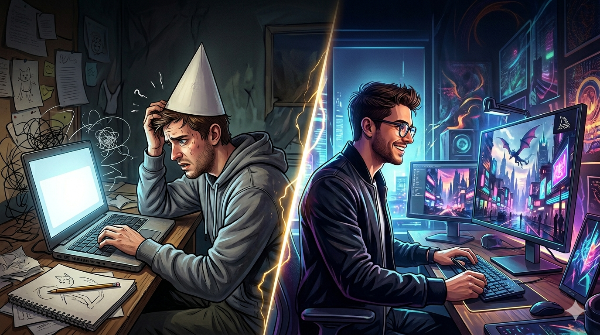

Stop prompting. Start engineering.
Dunce to Midjourney Pro takes you from absolute beginner to commercially capable AI image engineer — one structured phase at a time.
- Phase 1 — The First Spark: engine mechanics, interface mastery, foundational prompting
- Phase 2 — The Style Weaver: aesthetic control, mood architecture, advanced parameters
- Phase 3 — The Ghost in the Machine: surgical in-painting, workflow systems, consistency frameworks
- Phase 4 — The Commercial Edge: character packs, client delivery, business models
- Bonus — Post-Production Suite: Photoshop, Illustrator, and print-ready output
Built for creators, designers, and entrepreneurs who need production-grade AI imagery — not just pretty pictures.
Dunce to Midjourney Pro

AI Image Generation Mastery
Dunce to
Midjourney Pro
From zero to commercial-grade AI imagery: prompting, style architecture, surgical editing, and production-ready workflows.
Hexadigitall Technologieshexadigitall.com